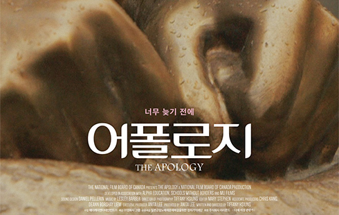

944년 일제강점기 말,
같은 마을에서 태어났지만 전혀 다른 운명을 타고난 두 소녀.
이제는 같은 운명이 되어버린 두 소녀 앞에는 지옥 같은 전쟁이
펼쳐지고, 반드시 집에 돌아갈 거라 다짐하는 ‘종분’을 비웃듯
‘영애’는 끔찍한 현실을 끝내기 위해 위험한 결심을 하는데…
귀향
"여기가 지옥이다 야"
1943년, 천진난만한 열네 살 정민(강하나)은 영문도 모른 채 일본군
손에 이끌려 가족의 품을 떠난다. 정민은 함께 끌려온 영희(서미지),
그리고 수많은 아이들과 함께 기차에 실려 알 수 없는 곳으로 향한다.
제2차 세계대전, 차디찬 전장 한가운데 버려진 정민과 아이들...

어폴로지
역사가 ‘위안부’라 낙인 찍는다 해도, 우리에겐 그냥 ‘할머니’다
제2차 세계대전 당시 일본군에 의해 성노예로 강제로 끌려간
약 20만 명이 넘는 ‘위안부’ 중 한국의 길원옥 할머니, 중국의
차오 할머니, 필리핀의 아델라 할머니의 인생 여정을 그린다.